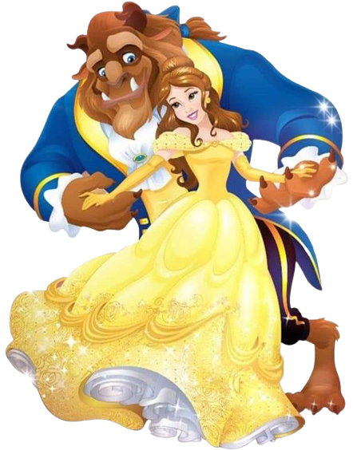

THERE WAS ONCE a very rich merchant who had three daughters; being a man of sense, he spared no cost for their education. His daughters grew to be very beautiful, especially the youngest, who was called Beauty, a special name that made her sisters very jealous of her.
The two eldest had a great deal of pride because they were rich. They gave themselves ridiculous airs, and would not visit other merchants' daughters, nor keep company with any but persons of quality. They went out every day to parties, balls, plays, concerts, and so forth, and they laughed at their youngest sister, because she spent the greatest part of her time in reading good books.
Suddenly, all at once the merchant lost his whole fortune, accepting a small country house at a great distance from town, and told his children with tears in his eyes that they must go there and work for their living. The two eldest answered that they would never have to leave the town, for they had several prominent merchants who they were sure would be glad to have them, though they had no fortune.
But the good ladies were mistaken, for their lovers slighted and forsook them in their poverty. As they were not liked on account of their pride, everybody said; they do not deserve to be pitied, we are very glad to see their pride humbled, let them go and give themselves quality airs in milking the cows and minding their dairy. But, added they, we are extremely concerned for Beauty, she is such a charming, sweet-tempered creature who speaks so kindly to poor people and has such a friendly, gracious nature.
When they came to their country house, the merchant applied himself to farming and Beauty rose at four in the morning. Before the others stirred, she made haste to clean the house and prepare breakfast for the family. In the beginning she found it very difficult, for she had not been used to work as a servant, but in less than two months she grew stronger and healthier than ever. After she had done her work, she read, played on the harpsichord, or else sung while she spun yarn.
On the contrary, her two sisters did not know how to spend their time. They got up at ten and did nothing but saunter about the whole day, lamenting the loss of their fine clothes and acquaintance. "Do but see our youngest sister," they snickered, one to the other, "how well she's suited to a life of menial labor."
The family had lived about a year in the country house when the merchant received a letter with an account that a ship he thought had been lost at sea, that held on board dozens of bolts of cloth and silks he had purchased, had in fact safely arrived. The family rejoiced in the turn of their fortune. When the two eldest daughters saw their father ready to set out, one begged of him to buy her a new necklace of gems, and the other a thick golden chain, but Beauty asked only for a rose.
The good man set off on his journey. But when he came there, oh such problems there were over who properly owned the ship and the merchandise on board, and after a great deal of trouble and pains to no purpose, he came back as poor as before, especially after he bought the fine new necklace and gold chain he promised to his two older daughters. Thinking he might come upon a rosebush to satisfy the wish of his youngest daughter, he led his horse deep into the woods. As the sun set and the wind began to howl, the poor man realized he was hopelessly lost. What's more, with the rain and the snow he knew he might well starve to death with cold or hunger, or be devoured by the wolves, whom he heard howling all round him. Then in an instant, looking through a long walk of trees, he saw a light at some distance. Going on a little farther, he noticed it came from a place lit with candles from top to bottom.
he merchant hastened to the place, but was greatly surprised at not meeting anyone in the outer courts. His horse followed him, and seeing a large stable open, went in, and finding both hay and oats, the poor beast, who was almost famished, fell to eating very heartily. The merchant tied him up to the manger and walked towards the house, where he saw no one. Entering into a large hall, he found a good fire and a table plentifully set out
As he was wet quite through with the rain and snow, he drew near the fire to dry himself. "I hope," said he, "the master of the house, or his servants will excuse the liberty I take; I suppose it will not be long before some of them appear."
At last he was so hungry that he could stand it no longer, but took a leg of chicken and ate it in two mouthfuls, trembling all the while. After this he drank a few glasses of wine. Growing more courageous, he went out of the hall and crossed through several grand apartments with magnificent furniture, until he came into a chamber. In the chamber was an exceedingly good bed, and as he was very tired and it was past midnight, he concluded it was best to shut the door and go to sleep.
It was ten the next morning before the merchant waked. As he was going to rise he was astonished to see a good suit of clothes laid out on the bed that would fit him perfectly. Certainly, said he, this palace belongs to some kind fairy, who has seen and pitied my distress. He then returned to the great hall where he had supped the night before, and found some chocolate ready made on a little table.
"Thank you, good Madam Fairy," said he aloud, "for being so careful as to provide me a breakfast. I am extremely obliged to you for all your favors."
The good man drank his chocolate and then went to look for his horse, but passing through an arbor of roses he remembered Beauty's request to him, and gathered a branch on which were several. Immediately he heard a great crash like thunder, and looking around he saw a huge monster - two tusks in his mouth and fiery red eyes surrounded by bristles and horns coming out of its head and spreading over its back.
"Please, sir," said the merchant in fear and terror for his life, "I promised my daughter to bring her home a rose and forgot about it till the last moment, and then I saw your beautiful garden and thought you would not miss a single rose, or else I would have asked your permission."
"Thieving is thieving," said the beast, "whether it be a rose or a diamond; your life is forfeit."
The merchant fell on his knees and begged for his life for the sake of his three daughters who had none but him to support them. "My lord," said he, "I beseech you to forgive me, indeed I had no intention to offend in gathering a rose for one of my daughters, who desired me to bring her one."
"You say you have daughters," replied the monster. "I will forgive you, on one condition - that one of them come willingly and suffer for you. Swear that if any of your daughters refuses to die in your stead, you will return within three months and place yourself at my disposal."
So the merchant swore. Taking his rose, he mounted his horse and rode home.
As soon as he got into his house, his daughters came rushing round him, clapping their hands and showing their joy in every way. He gave the necklace to his eldest daughter, the gold chain to his second daughter, and then he gave the rose to his youngest, and as he gave it he sighed.
"Oh, thank you, father," they all cried.
But the youngest said, "Why did you sigh so deeply when you gave me my rose?"
"Later I will tell you," said the merchant.
So for several days they lived happily together, though the merchant wandered about gloomy and sad, and nothing his daughters could do would cheer him up till at last, pressed by his youngest daughter, he related his fatal adventure.
Beauty spoke: "Since the monster will accept one of his daughter," said she, "I will deliver myself up to all his fury, and I am very happy in thinking that my death will save my father's life, and be a proof of my tender love for him."
"Beauty, I am charmed with your kind and generous offer," said the merchant, "but I cannot let you do it. I am old and have not long to live, so can will lose only a few years, at the most."
"Indeed father," said Beauty, "you shall not go to the palace without me, you cannot stop me from following you." Beauty insisted on setting out for the palace, and made the necessary preparations for herself, and her sisters were secretly delighted at the prospect of getting rid of her once and for all.
So next day the merchant took Beauty behind him on his horse, as was the custom in those days, and rode off to the dwelling of the beast. When he got there and they alighted from his horse the doors of the house opened, and what do you think they saw there? Nothing.
There they saw a table spread with all manner of beautiful glasses and plates and dishes and napery, with plenty to eat upon it. So they waited and they waited, thinking that the owner of the house would appear, till at last the merchant said, "Let's sit down and see what happens then." When they sat down, invisible hands passed them things to eat and to drink, and they ate and drank to their heart's content. And when they arose from the table it arose too and disappeared through the door as if it were being carried by invisible servants.
Suddenly the Beast filled the doorway. "Is this your youngest daughter?" he boomed. And when he had said that it was, the Beast said, "Is she willing to stay here with me?" Then he looked at Beauty who said, in a trembling voice, "Yes, sir."
"Well, no harm shall befall you." With that he led the merchant down to his horse and said to him, "Honest man, go your ways tomorrow morning, but never think of coming here again." Then the Beast returned to Beauty and said to her, "This house with all that is therein is yours; if you desire anything, clap your hands and say the word and it shall be brought to you." And with that he made a sort of bow and went away.
So Beauty lived on in the home of the Beast and was waited on by invisible servants and had whatever she liked to eat and to drink, but she soon got tired of the solitude. Next day, when the Beast came to her, though he looked so frightening, she had been so well treated that she had lost a great deal of her terror of him. So they spoke together about the garden and the house and her father's business and all manner of things, so that Beauty lost altogether her fear of the beast.
"Beauty," said the Beast, "if my presence is troublesome, I will end our conversation and leavy you. For tell me, do not you think me very ugly?" "It is true," said Beauty, "for I cannot tell a lie, but I believe you are very good natured."
"Among mankind," says Beauty, "there are many that deserve that name more than you, and I prefer you, just as you are, to those, who, under a human form, hide a treacherous, corrupt, and ungrateful heart."
Beauty ate a hearty supper and had almost conquered her dread of the monster, but she nearly fainted away when he said to her, "Beauty, will you be my wife?"
It was some time before she dared answer, for she was afraid of making him angry if she refused. At last, however, she said trembling, "No, Beast." Immediately the poor monster sighed, and then hissed so frightfully that the whole palace echoed. But Beauty soon recovered her fright, for Beast said in a mournful voice, "then farewell, Beauty," and left the room.
Beauty spent the next three months very contentedly in the palace. Seeing the Beast often had so accustomed her to his deformity, that, far from dreading the time of his visit, she would often look on her watch to see when it would be nine, for the Beast never missed coming at that hour. There was only one thing that gave Beauty any concern, which was that every night, before she went to bed, the monster always asked her, if she would be his wife. One day she said to him, "Beast, you make me very uneasy, I wish I could consent to marry you, but I am too sincere to make you believe that will ever happen; I shall always esteem you as a friend, please try to be satisfied with this."
"I suppose I must," said the Beast, "for, alas! I know too well my own misfortune. Though I ought to think myself happy that you will stay here; promise never to leave me."
Beauty blushed at these words. "I could," answered she, "indeed, promise never to leave you, but I have so great a desire to see my father that I'm afraid I shall fret to death if you refuse me that satisfaction."
"Perhaps this will help," said the Beast. He handed her a handled looking-glass and in the round mirror was the image of Beauty's father, pining himself sick for the loss of her.
"Oh!" she cried, and all the color rushed from her face. "I would rather die myself," said the monster, "than give you the least uneasiness. I will send you to your father. You may remain with him for one week, but if you do not return before the end of the week, poor Beast will die with grief." "I give you my promise," said Beauty, "to return in a week." "You shall be there tomorrow morning," said the Beast. "Take this magic looking-glass with you, and this ring. You need only to lay your ring on the mirror before you go to bed, when you have a mind to come back. Farewell Beauty
No sooner had she said this than the hide of the beast split in two and out came a most handsome young prince. The prince told her that he had been enchanted by a magician and could not recover his natural form until a maiden would, of her own free will, declare that she loved him. Thereupon the prince sent for the merchant and his daughters, and he was married to Beauty, and they all lived happily ever after.